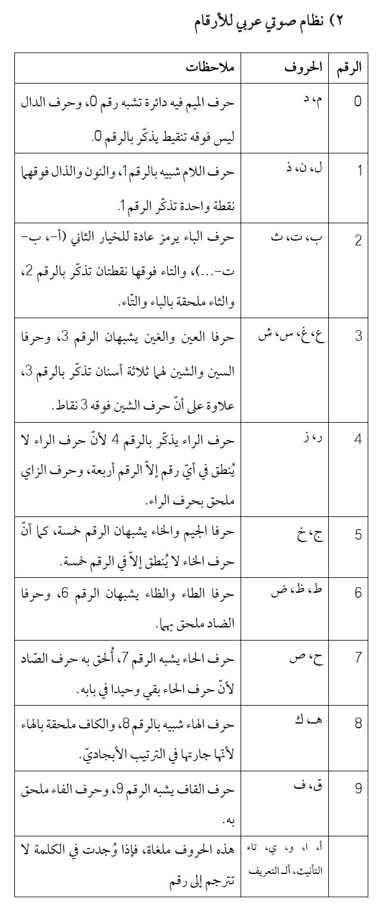

الأسماء كلها
هذا تلخيص لكتاب «الأسماء كلها» لكاتبه أبو حامد القطان. نص الكتاب متوفر مجانًا على قناة الكتاب على تلغرام، أو بشكل مدفوع بصيغة PDF على موقع Gumroad من خلال الرابط التالي: https://gumroad.com/l/RJclH
مقدمة
يتحدث الكتاب عن طرق التعلم والتذّكر الفعالة؛ موضوع أصبح لدي اهتمام كبير به مؤخرًا وأعتقد أننا بأمس الحاجة إليه في عصر ضخ المعلومات والتشتت المعرفي.
مع كثرة الأبحاث والتجارب في هذا المجال منذ عقود طويلة، أغلب ما يطرحه الكتاب غير معروف تقريبًا بالمنطقة العربية وغير موظف بشكل كافي. وأعتقد أنه حتى في الأمم الأخرى بعض تقنيات التعلم الفعالة -بعضها معروف منذ أكثر من 100 سنة- لم تلقَ الرواج والاهتمام الذي تستحقه إلا مؤخرًا مع الانتشار النسبي لبعضها نظرًا للضرورة التي شعر بها كثيرون.
مع تركيز الكتاب على توظيف التقنيات التي يتطرق إليها في تعلم العلوم الإسلامية، إلا أن الكاتب لم ينسَ أن ينبه أن هذه التقنيات عامة يمكن توظيفها لتعلم أي شيء تقريبًا.
الفهم أم الحفظ؟ أو لمَ خلق التعارض؟
يبدأ الكتاب بمناقشة جدلية الفهم والحفظ؛ دعامتي البناء المعرفي كما يسميهما، ويرى أن العلوم تختلف بدرجة اعتمادها على دعامة من الدعامتين على حساب أخرى، وأن أبرز التحديات في العملية التعليمية هي تحقيق التوازن بينهما.
يناقش في هذا الصدد المذاهب الثلاث في هذا الموضوع: الإفراط (الاتكال على الحفظ بدرجة أكبر)، التفريط (اللامبالاة بالحفظ)، والقصد (الحل الوسط). يرجح الكاتب مذهب القصد طبعًا؛ لأنه يرى أن العلاقة بين الفهم والحفظ وطيدة يعضد كل منهما الآخر. إلا أنه يعترف بتقدم الفهم على الحفظ، وبكون الحفظ -في النهاية- خادمًا لما يستوعبه العقل يصونه من الضياع. ثم يضرب الكاتب بعض الأمثلة عن الخلل في الموازنة بين هاتين الدعامتين، مثل تقديم الحفظ على الفهم أو حفظ ما يمكن الاستغناء عنه.
طرق شائعة غير فعالة
يتحدث الكتاب بعدها عن أكثر طرق التعلم شيوعًا وهي تكرار المقروء عدة مرات حتى يحصل الفهم على الأقل. مع أن هذه الطريقة تعطي شعورًا بالمعرفة والفهم، إلا أنه شعور زائف يكتشف المرء وعوده الكاذبة ما أن يُسأل عما تعلمه ويجد ذهنه كصندوق خاوِ في أحيان كثيرة. يعطي الكتاب مثالًا عن تجربة علمية -من سيل التجارب- التي تثبت عدم كفاءة هذه الطريقة. ويرى أن استراتيجية «القراءة السلبية» هذه فاشلة تسطح المادة المدروسة وتجعلها على مستوى واحد من ناحية الفهم ومتطلباته. لكنه ينبه أيضًا إلى أن هذا لا يعني أن فكرة التكرار بعمومها غير فعالة، إنما هو التكرار «السلبي» والذي سيتضح اختلافه عن النوع الآخر قريبًا.
يستمر الكاتب باستعراض بعض الطرق غير الفعالة، مثل طريقة التسطير والتظليل، والتي يُظَن أنها طريقة تعلم! ويضرب مثالًا آخر بطريقة ما يسمى بـ«خرائط العقل»، والتي هي أيضًا غير مثبتتة الفعالية، ولا تعدو كونها طريقة لإنشاء روابط بين المعلومات، لكنها لا تغني عن الفهم والممارسة اللتين يجب أن يكون لهما الأولوية والسبق، وإلا غدت هذه الطريقة خداعًا للنفس بوهم المعرفة.
طرق التعلم الفعالة
نأتي الآن للسؤال المثير وهو ما الطرق الفعالة للتعلم؟
يلخص الكاتب التعلم الفعال، «النشط» بثلاث أركان:
-
استخراج العلم
-
المباعدة بين أوقات المراجعة
-
التداخل في مسائل العلم
يعتقد الكاتب أن هذه الطرق صعبة وشاقة، لكن بذل الجهد ضروري لترسيخ المعرفة في العقل كما دلت على ذلك أبحاث كثيرة تدحض فكرة أن سهولة عملية التعلم ويسرها تعني فعاليتها.
«الاستخراج» يعني محاولة استدعاء معلومة ما من الذاكرة، ومن صوره الخضوع للاختبار. يعطي الكاتب مثالًا عن تجربة علمية تثبت أن الاستخراج ضروري للحفظ والفهم، وأن مجرد إعادة القراءة غير فعال، بل إن التفاعل والاهتمام ومعالجة المعلومة في غاية الأهمية. من مظاهر التفاعل مع ما يراد تعلمه هو إعادة صياغته بصيغتك الخاصة، وهذا قد يعتبر دليلًا على الفهم.
فكرة مهمة يجب أخذها بعين الاعتبار بجانب المراجعة الفعالة هي المباعدة بين أوقات المراجعة، وهذا على عكس ما يفعله كثير من المتعلمين (خصوصًا طلاب المدارس والجامعات قبل الامتحانات). المباعدة تعني أن تراجع المادة مرة اليوم، ثم بعد ثلاثة أيام، ثم بعد أسبوع وهكذا. يلاحظ الكاتب أن المراجعة هي امتداد للفهم وليست شيئًا منفصلًا، فليس من النادر أن تكتشف أشياء جديدة في المادة المدروسة في كل مرة تراجعها فيها. فالمراجعة هي إذن توسيع آفاق خصوصًا إذا كانت متباعدة بحيث يكون وقتها قبل أن تنسى ما تعلمته، لأن عقلك سيواجه صعوبة في التذكر، ما يجعلك تتفاعل مع المادة أكثر ويقوي الترابطات التي تنشئها حولها.
الفكرة الثالثة، التداخل في مسائل العلم، تعني ممارسة أكثر من مجال في نطاق العلم المراد تعلمه في الوقت نفسه، وعدم التركيز على باب واحد. وهذا عكس السائد. قد تعزى فعالية هذه الفكرة إلى أن المداخلة بين العلوم تعطي فرصًا أكثر لخلق الروابط بين أمور متنوعة محفزة للعقل أكثر من التركيز الأحادي الضيق على موضوع محدد.
يستطرق الكاتب باختصار بعدها إلى طرق وأفكار فعالة أخرى يمكن استخدامها بجانب الأركان الأساسية التي ذكرنها سابقًا، مثل: محاولة الربط بين تعرفه مسبقًا وما تتعلمه الآن، البحث عن أنماط عامة تسهل التعلم، التفكر وطرح الأسئلة، أخذ استراحة من التركيز على تعلم شيء أو حل مشكلة ما ثم العودة إليها كطريقة لتوسيع المنظور، إلخ.
يتوسع الكاتب بعدها بمناقشة فكرة الحفظ وعلاقتها بالفهم وأفكار أخرى مثل الإبداع. يناقش فكرة أننا يجب ألا نعطي الحفظ قدرًا وأن نركز على أشياء مثل التفكير والتحليل والإبداع، ويرد على هذا الطرح بأن كل هذه الأشياء تقوم على أساس متين من الإتقان والفهم والحفظ، وهي تراكمية لا تأتي بلحظة كما قد يتصور البعض.
على صعيد آخر، يناقش الكاتب بعدها فكرة ما يسميه «الحفظ الجائر» وهو الحفظ الذي لا يرجى منه فائدة غير الحفظ نفسه، ويعطي مثالًا عن حفظ المتون ذات الطابع الشرعي مثل الأبيات وشروحها، وكيف أنها تأخذ من وقت طالب العلم الكثير بدون مردود مكافئ، ويعتقد أنه من الممكن استخراج الفائدة من هذه المتون بدون صرف وقت كبير على حفظها.
يدعو الكاتب إلى الاقتصاد في الحفظ وينتقد فكرة تسطيح العلوم وعدم أخذ الفروقات الشخصية بعين الاعتبار عند التعلم، كمن يكرر أبيات من الشعر كل بيت بعدد مرات ثابت (100 مثلًا) ولا يراعي حقيقة أن بعض الأبيات قد تكون سهلة ولا تستدعي كل هذا التكرار. يعطي الكاتب أيضًا أمثلة عملية من تجربته حول حفظ المتون ويحدد طريقتين مخصصتين لحفظ المتون ويشرحها بتفصيل لا داعي لتكراره هنا.
المذكرات
يتطرق الكتاب بعدها إلى فكرة «المذكِّرات» (mnemonics) وهي تقنيات مساعدة على التذكر. المذكرات هي تقنيات عملية قد تُبنى على المبادئ السابقة الي تطرقنا لها، وهي مفيدة خصوصًا على المدى القصير وليست بديلًا عن الاستحضار الفعال والمراجعة.
يعطي الكاتب أمثلة عن النوعين الرئيسيين لهذه التقنيات: المذكرات اللفظية والمذكرات البصرية.
باختصار، تقوم المذكرات اللفظية على فكرة استغلال خصائص لغة ما يراد تعلمه، من وزن ونغم وحروف وكلمات، والربط بينها وبين كلمات ومفاهيم أخرى قد تساعد على تذكر المادة المراد تذكرها.
يحشد الكاتب لهذا النوع كثيرًا من الأمثلة القيمة، لكن لنعط مثالًا ذكره الكاتب وأظن أن أغلبنا يعرفه:
حروف الإخفاء مجموعة في بيت:
صف ذا ثنا كم جاد شخص قد سما دم طيبا زد في تقى ضع ظالما
وهذا مثال عن المذكرات اللفظية طبعًا.
لننتقل إلى المذكرات البصرية وهي أكثر فعالية من اللفظية لقدرة الإنسان المتقدمة على تذكر الصور والأشياء الملموسة أكثر من الألفاظ والمفاهيم المجردة.
مثال مثير للاهتمام عن المذكرات البصرية هو ما يسمى نظام القصة، والذي يقوم على نسج قصة خيالية تربط المعلومة المراد تعلمها بأحداث سهلة التذكر. يعطي الكاتب مثالًا مسليًا عن استخدام هذه التقنية لتذكر قائمة كلمات. تعزز غرابة القصة والمبالغة فيها من قدرتك على تذكر القصة، لأن الإنسان بطبعه يميل إلى الاهتمام بالأشياء غير المألوفة.
يعطي الكاتب أمثلة أخرى عن أنظمة المذكرات البصرية، مثل نظام الأماكن (Loci System) والذي يقوم على ربط أماكن مألوفة بالعناصر المراد حفظها، ونظام المشابك (The Peg System) والذي هو بمثابة مزيج بين الأنظمة البصرية واللفظية حيث يتم الربط بين قائمة من عناصر يراد حفظها بترتيب معين مع كلمات لأشياء يسهل تذكرها تتناغم مع ألفاظ الأرقام، كمثال أعطاه الكاتب:
صفر : صقر
واحد : والد
اثنين : إسفين
ثلاثة : ثلاجة
....
مهمتك هنا هي إيجاد رابط سهل التذكر بين كلمة «صقر» والعنصر الأول الذي تريد تذكره، ونفس الشيء للعناصر الأخرى.
ثم يأتي الكاتب لذكر النظام الصوتي (Phonetic System أو Major System)، وهو نظام مخصص بحفظ الأرقام، حيث يتم ربط كل رقم أو مجموعة أرقام بحروف ساكنة، ثم ربط الحروف الساكنة ببعضها بإضافة حروف صوتية استنادًا إلى النغم أو الشكل أو شيء آخر. لننقل المثال التالي من جملة الأمثلة التي يعطيها الكاتب:
مثلا لو ربطنا الرقم 3 : بحرف السين ورقم 9 : بحرف الفاء، فكلمة (سيف) تدلّ عل الرقم (93)، حيث أنّ الياء اللّينة هنا ملغاة. مثلا لو أردتُ أن أحفظ أنّ الصحابي أنس بن مالك -رضي الله عنه - توفّي سنة 93 ه فأتخيّل شخصا أعرفه اسمه أنس يحفر قبرا بسيف. هذه المذكّرة البصريّة فيها 3 رموز:
- أنس: لأنس بن مالك
- حفر القبر: للوفاة
- السيف: لسنة 93 ه
طور الكاتب نظامًا كاملًا لربط الأرقام بكلمات عربية سهلة التذكر نستعرضه باختصار لاحقًا.
برنامج أنكي (Anki)
يتطرق الكاتب بعدها على تطبيق عملي مهم للأبحاث النظرية في مجال الذاكرة وهو برنامج أنكي. أنكي هو برنامج لتسهيل التذكر، مبني بشكل أساسي على فكرة التكرار المتباعد (Spaced repetition). البرنامج هو عبارة عن سبورة فارغة تملؤها بما تريد تذكره، حيث تسجل المعلومات على شكل سؤال-جواب، ويعرض عليك البرنامج هذه الأسئلة ويعطيك عدة خيارات لتقييم أدائك بنفسك. مهمة البرنامج هي أن يحدد الوقت المثالي لمراجعة المعلومة مجددًا بناءً على تقييمك الذاتي.
ينقل الكاتب بعدها بتفصيل 20 مبدئًا مهمًا لصياغة الأسئلة بصيغة فعالة. هذه المبادئ معروفة خصوصًا لمستخدمي Anki و SuperMemo (برنامج آخر يطبق فكرة التكرار المتباعد).
أنظمة مذكرات عربية
طبق الكاتب تقنيات المذكرات السابق ذكرها وابتكر أنظمة عربية مفيدة جدًا ننقل أمثلة منها هنا:

أفكار مشاريع
يستعرض الكاتب أخيرًا أفكار يدعو المهتمين للعمل عليها؛ مثل ترجمة أدبيات الذاكرة وفنونها من اللغة الإنجليزية، أو برمجة تطبيق عربي مشابه لأنكي، أو برمجة موّلد كلمات للنظام الصوتي الذي طوره الكاتب (الفكرة التي أثارت اهتمامي)1.
خاتمة
موضوع الذاكرة وطرق التعلم هو موضوع زاد اهتمامي به بدرجة كبيرة في السنوات الأخيرة، نظرًا لكثرة المجالات التي أحب التعلم عنها، ويسعدني أن هناك اهتمامًا متزايدًا (ولو ما زال ضئيلًا) بهذا الموضوع مؤخرًا في الأوساط العربية الإسلامية.
مراجع
-
قناة الكتاب على تلغرام: https://t.me/Asmaae_Kollaha
-
قناة أخرى تفاعلية: https://t.me/Asmaae_Kollaha_Group
-
الكتاب بصيغة PDF (مدفوع): https://gumroad.com/l/RJclH
-
مدونة عن الكتاب: https://alasmaaekolaha.blogspot.com/
-
منتديات نقاش: https://alasmaaekolaha.freeforums.net/
-
صفحة الكتاب على فيسبوك: https://www.facebook.com/alasmaaekolaha